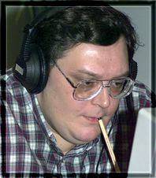

Literary Critics of The Third Wave
Russians in America: The Third Wave
Critics
Some would complain that Russian literature in emigration lacked the critical voices represented in earlier generations by such figures as Adamovich or Khodasevich. The pages of the newspapers and journals, however, had no lack of critical voices, from Genis (Генис) and Vail' (Вайль) to Popovosky (Поповский), Liudmila Kafanova (Людмила Кафанова), etc. I have focused primarily on Genis and Vail', but that is admittedly only a beginning. This area deserves far more attention from future scholars. I have chosen to deal with scholars and Slavists, even those of Russian birth who belonged to the Third Wave itself, in the section on scholars. Many crossed over the line from the émigré community to communicate their opinions to students in lectures and in scholarly works primarily in English to further their academic careers.
 Aleksandr (Sasha) Genis (Генис Александр) (1953-). Genis arrives in the United States in 1977 and works for Новое Русское Слово. But his claim to fame comes with his collaboration on articles and books with Petr Vail'. Together they edit for a short time Семь дней, a weekly literary supplement to Новое Русское Слово, but they achieve almost star status as the chief literary critics of the weekly newspaper Новый Американец. They will also work in the 1980s for Radio Liberty (Радио Свобода) in New York. Their 1982 book on Contemporary Russian Prose (Современная русская проза) was one of the first serious investigations of Russian literature abroad. Their Paradise Lost (Потерянный рай, 1983) reflected on the American experience and the disconnect between expectations and reality. Together they published five volumes, most of which have been republished in Russia. Both were strong supporters of Brodsky and Dovlatov and Genis himself has characterized their own contribution as creating a Russian language that was neither outdated as that of earlier emigrations nor replete with Soviet conventions. Genis continues to write today, although his intellectual soulmate, Vail is in Prague. An electronic search of publications by Genis reveals over fifty titles.
Aleksandr (Sasha) Genis (Генис Александр) (1953-). Genis arrives in the United States in 1977 and works for Новое Русское Слово. But his claim to fame comes with his collaboration on articles and books with Petr Vail'. Together they edit for a short time Семь дней, a weekly literary supplement to Новое Русское Слово, but they achieve almost star status as the chief literary critics of the weekly newspaper Новый Американец. They will also work in the 1980s for Radio Liberty (Радио Свобода) in New York. Their 1982 book on Contemporary Russian Prose (Современная русская проза) was one of the first serious investigations of Russian literature abroad. Their Paradise Lost (Потерянный рай, 1983) reflected on the American experience and the disconnect between expectations and reality. Together they published five volumes, most of which have been republished in Russia. Both were strong supporters of Brodsky and Dovlatov and Genis himself has characterized their own contribution as creating a Russian language that was neither outdated as that of earlier emigrations nor replete with Soviet conventions. Genis continues to write today, although his intellectual soulmate, Vail is in Prague. An electronic search of publications by Genis reveals over fifty titles.
 Petr Vail' Вайль Петр (1949-). He came to the United States in 1977 and his career path dove-tailed with that of his friend and co-author Aleksandr Genis. Vail' is now at Radio Free Europe/Radio Liberty in Prague where he continues to broadcast and write about Russian literature. He remains a prolific writer with forty works to his name.
(e-mail: VailP@rferl.org)
Petr Vail' Вайль Петр (1949-). He came to the United States in 1977 and his career path dove-tailed with that of his friend and co-author Aleksandr Genis. Vail' is now at Radio Free Europe/Radio Liberty in Prague where he continues to broadcast and write about Russian literature. He remains a prolific writer with forty works to his name.
(e-mail: VailP@rferl.org)
Two important works by the both include the article: "Мы – С Брайтон Бич" in Время и мы (1979) and the book, Современная русская проза.
Sergei Dovlatov Довлатов Сергей (1941-1990). Known more for his prose and his editor's columns in Новый Американец, Dovlatov must still be included among the literary critics of the American emigration. He is covered in more detail in a separate entry as a Russian author.
Mark Popovsky Поповский Марк. He wrote mainly for Новое Русское Слово and many of those pieces have been gathered in a three-volume labor of love edited by Aron Katsenelinboigen On the Other Side of the Planet (На другой стороне планеты). See Popovsky's article "Писатели и Америка" Новое Русское Слово, 14 April 1992.
In addition to the work of Dovlatov, Genis and Vail' in Новый Американец, the other major newspapers of he emigration, Новое Русское Слово , Новая Газета, and Панорама, had reviewers and critics who surveyed the scene of Russian literature. And while the topic of whether there was one or more "Russian" literatures frequently generated comment, almost all the critics and scholars wrote on works and writers published both within and outside of the Soviet Union.

Ivan Tolstoi (Толстой Иван) of Radio Liberty is well known as an expert on the emigration. He continues to study, document and comment on the Third Wave from Radio Liberty in Prague. He has assembled a marvelous selection of interviews done for Radio Liberty spanning a half century accessible here.
Maya Pritsker (Прицкер Майя) is cultural editor today at Новое Русское Слово. She too might be able to shed light on the Third Wave.
Who, What, Where and When?
Internet Links
Другие Ссылки